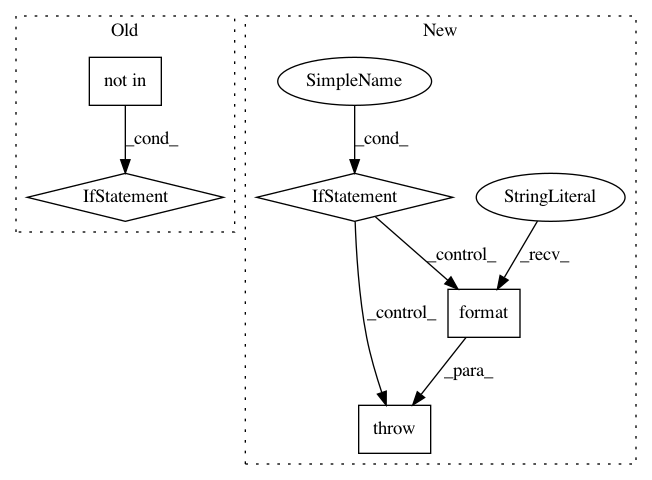

eb91f3cc51551f7aea71c653b0dcf9b86b2c224a,ludwig/features/vector_feature.py,VectorBaseFeature,add_feature_data,#Any#Any#Any#Any#Any#,78
Before Change
if num_vectors == 0:
raise ValueError("There are no vectors in the dataset provided")
if "vector_size" not in preprocessing_parameters:
vector_size = len(VectorBaseFeature.read_single_vector(
dataset_df[feature["name"]][0]
))
else:
vector_size = preprocessing_parameters["vector_size"]
metadata[feature["name"]]["vector_size"] = vector_size
data[feature["name"]] = VectorBaseFeature.feature_data(
dataset_df[feature["name"]].astype(str),
After Change
// Determine vector size
vector_size = len(data[feature["name"]][0])
if "vector_size" in preprocessing_parameters:
if vector_size != preprocessing_parameters["vector_size"]:
raise ValueError(
"The user provided value for vector size ({}) does not "
"match the value observed in the data: {}".format(
preprocessing_parameters, vector_size
)
)
else:
logger.warning("Observed vector size: {}".format(vector_size))
metadata[feature["name"]]["vector_size"] = vector_size
In pattern: SUPERPATTERN
Frequency: 3
Non-data size: 5
Instances
Project Name: uber/ludwig
Commit Name: eb91f3cc51551f7aea71c653b0dcf9b86b2c224a
Time: 2019-08-26
Author: smiryala@uber.com
File Name: ludwig/features/vector_feature.py
Class Name: VectorBaseFeature
Method Name: add_feature_data
Project Name: tryolabs/luminoth
Commit Name: 3d76f1419df74f80369785cc962f1d143eb172de
Time: 2018-03-20
Author: joaquin.alori@gmail.com
File Name: luminoth/models/ssd/ssd_feature_extractor.py
Class Name: SSDFeatureExtractor
Method Name: __init__
Project Name: ray-project/ray
Commit Name: 1d532d1cb8b829bdf7055a22c206032ca0b72e46
Time: 2020-04-02
Author: rkooo567@gmail.com
File Name: python/ray/dashboard/metrics_exporter/schema.py
Class Name: BaseModel
Method Name: parse_obj